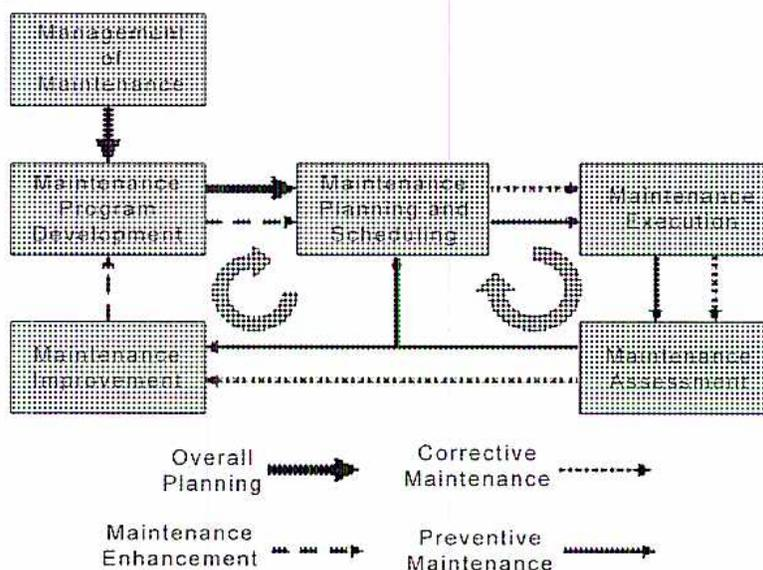
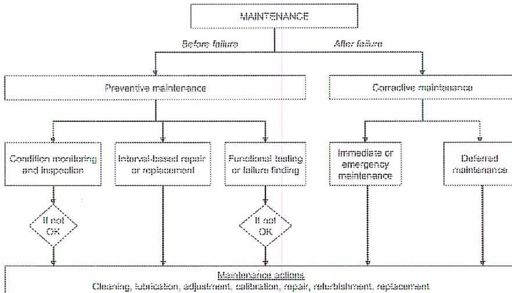
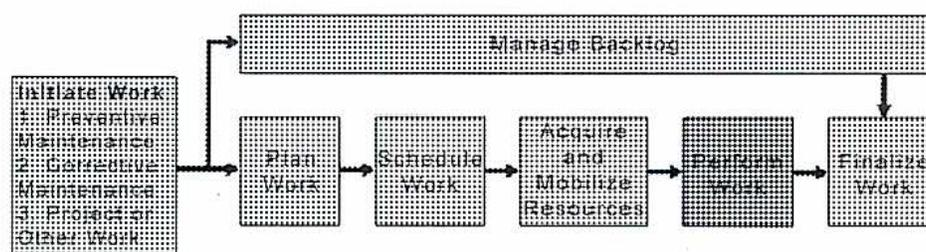
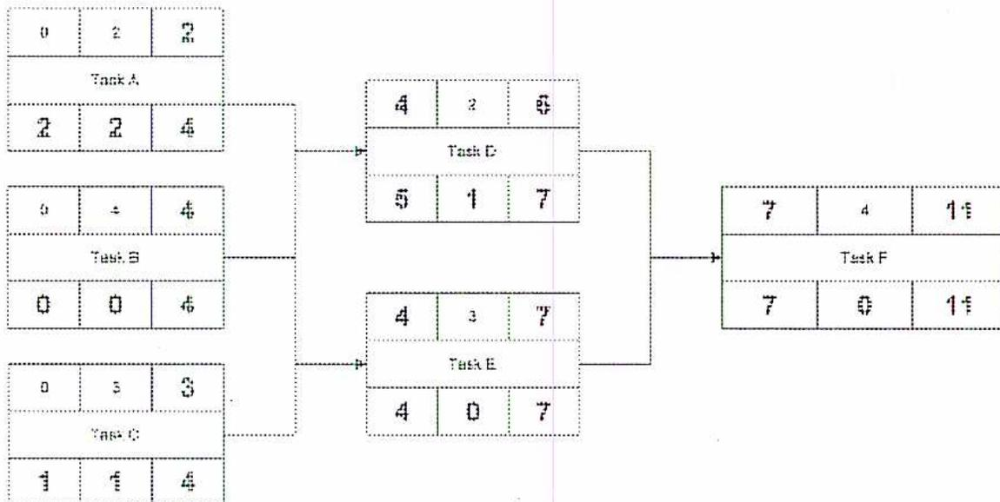
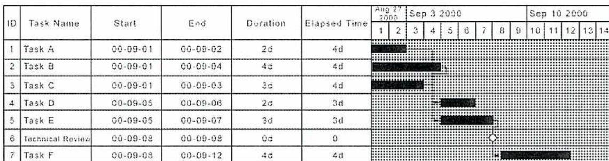
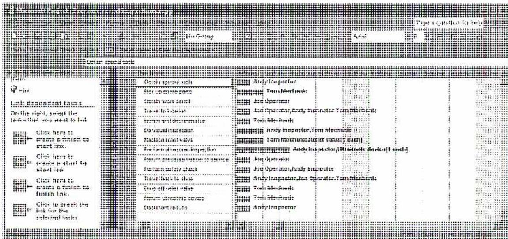
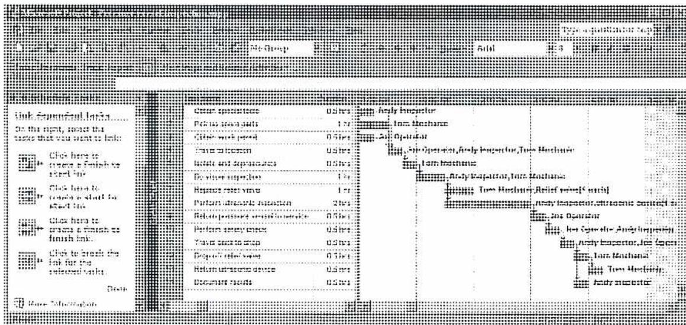
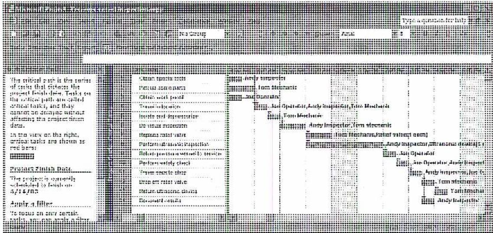
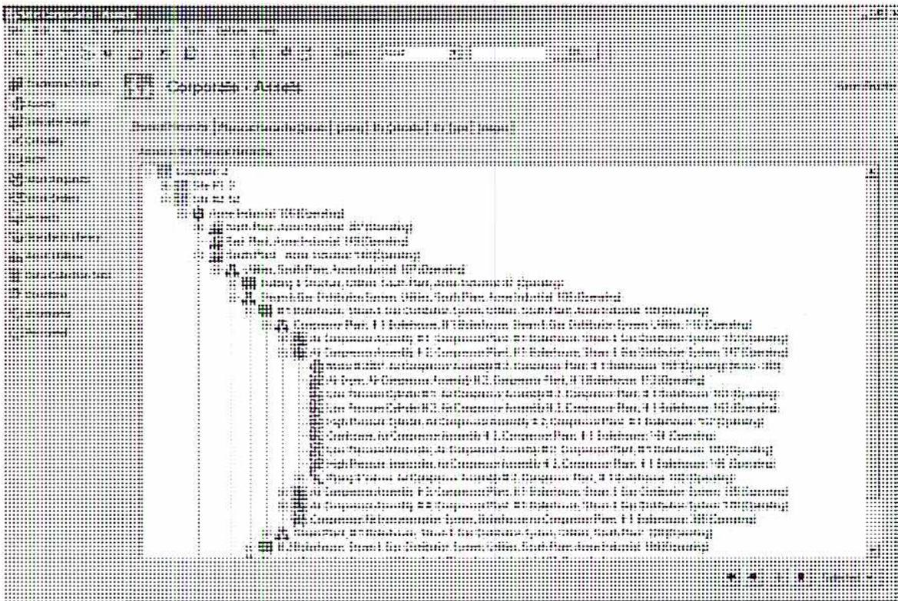
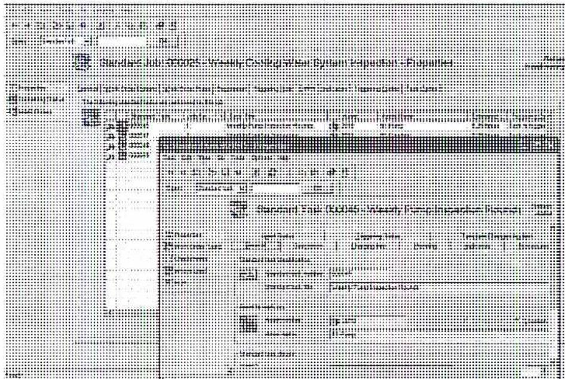

When you complete this learning material, you will be able to:
Describe plant maintenance management systems.
You will specifically be able to complete the following tasks:
This is a blank sheet of lined paper with a vertical pink margin line on the left and three punch holes on the right.
Describe the major aspects of managing maintenance activities including management of maintenance, maintenance program development, planning, scheduling, performing maintenance, assessment and improvement.
Proper maintenance is a critical factor in the successful operation of all types of equipment. In addition to good execution of maintenance tasks, it is also important to understand other aspects of maintenance management. If these aspects are not considered, it is likely that the actual maintenance will not be effectively or efficiently carried out. This module provides an overview of these aspects so that a successful maintenance management program can be set up.
The first thing to consider is the definition of maintenance.
Maintenance: “The combination of all technical and administrative actions, including supervision actions, intended to retain an item in, or restore it to, a state in which it can perform a required function.”
International Electrotechnical Commission (IEC). International Electrotechnical Vocabulary IEV191-07-01 . Mortagne-au-Perche: Imprimerie de Montligeon, 1990.
This definition has a number of components:
Fig. 1 shows the major aspects of maintenance. Each aspect includes a number of processes that are carried out by different people involved in maintenance.
These processes can be divided into four categories:

graph TD
subgraph Overall_Planning [Overall Planning]
A[Management of Maintenance] --> B[Maintenance Program Development]
B --> C[Maintenance Planning and Scheduling]
end
subgraph Corrective_Maintenance [Corrective Maintenance]
C --> D[Maintenance Execution]
D --> E[Maintenance Assessment]
end
subgraph Preventive_Maintenance [Preventive Maintenance]
E --> F[Maintenance Improvement]
F --> B
end
subgraph Maintenance_Enhancement [Maintenance Enhancement]
F --> A
end
C <--> D
D <--> E
E <--> F
F <--> B
B <--> C
Figure 1
Major Aspects of Maintenance
(Courtesy of Strategic Maintenance Solutions Inc.)
Management of maintenance is the responsibility of supervisors and managers and includes:
Maintenance program development is the responsibility of maintenance planners, with involvement from maintenance personnel, and includes:
Maintenance planning and scheduling is the responsibility of maintenance planners and includes:
Maintenance execution is performed by maintenance staff and includes:
Maintenance assessment is a responsibility shared by maintenance planners and maintenance personnel and includes:
Maintenance improvement involves not only maintenance staff, but may also involve other groups such as design engineering, and could result in:
Two process loops are shown in Fig. 1. The first one (on the right) is the maintenance cycle. This cycle takes place constantly as maintenance tasks are identified or triggered, planned, scheduled, executed, and assessed. The second loop (on the left) is the continuous improvement loop; it deals with incorporating changes and improvements in equipment, procedures, and tasks. Management of maintenance is also an ongoing activity although it is not involved in a cycle.
It is worthwhile noting that maintenance and reliability are closely related. Reliability starts with equipment that has been designed for the required operating conditions and performance. It must also be operated within design limits and according to specified operating procedures. Finally, the required maintenance has to be carried out. All three factors are necessary to achieve reliability.
Reliability can be used to measure the success of a maintenance program. However, it is not the only factor to consider since measures such as availability, product quality, production capacity, and cost may be equally, or even more, important.
Describe the different approaches to maintenance including preventive and corrective.
There are different approaches to managing maintenance. Methods and terminology are not entirely standard. Whereas some refer to 'maintenance management', others use the term 'asset management', or even the combined term 'maintenance and reliability'. Even though people use different approaches, the key concepts are the same.
Total Productive Maintenance (TPM) is a well-known formal approach to maintenance management. It was developed in Japan as part of the quality movement and uses a structured approach to ensure reliability and develop a standardized maintenance program. It applies to all aspects of maintenance. It is appropriate if a company wants a structured and formal means of improving maintenance and reliability. However, if there are known areas that need improvement, it may be more effective to address these areas individually rather than following a comprehensive method such as TPM.
Other approaches to maintenance management focus on risk management. These approaches include: Reliability Centered Maintenance, Risk-Based Inspection, and statistical risk assessment.
This module does not specifically recommend any of these approaches, but instead focuses on basic methods and procedures.
There are two major categories of maintenance: preventive and corrective.
Preventive Maintenance: "The maintenance carried out at predetermined intervals or according to prescribed criteria and intended to reduce the probability of failure or the degradation of the functioning of an item."
International Electrotechnical Commission (IEC). International Electrotechnical Vocabulary IEV191-07-07 . Mortagne-au-Perche: Imprimerie de Montligeon, 1990.
Corrective Maintenance: "The maintenance carried out after fault recognition and intended to put an item into a state in which it can perform a required function."
International Electrotechnical Commission (IEC). International Electrotechnical Vocabulary IEV191-07-08 . Mortagne-au-Perche: Imprimerie de Montligeon, 1990.
Preventive maintenance covers all pre-planned maintenance activities. There are various approaches, but preventive maintenance is always performed before failure occurs. On the other hand, corrective maintenance is done only after a failure. A further breakdown of these two types of maintenance is shown in Fig. 2.

graph TD
MAINTENANCE[MAINTENANCE] -->|Before failure| PM[Preventive maintenance]
MAINTENANCE -->|After failure| CM[Corrective maintenance]
PM --> CM1[Condition monitoring and inspection]
PM --> CM2[Interval-based repair or replacement]
PM --> CM3[Functional testing or failure finding]
CM1 --> D1{If not OK}
CM2 --> D1
CM3 --> D2{If not OK}
D1 --> MS[Maintenance actions]
D2 --> MS
CM --> CM4[Immediate or emergency maintenance]
CM --> CM5[Deferred maintenance]
CM4 --> MS
CM5 --> MS
MS --> MS_DETAILS["Cleaning, lubrication, adjustment, calibration, repair, refurbishment, replacement"]
The flowchart illustrates the classification of maintenance tasks. It starts with 'MAINTENANCE' at the top, which branches into 'Preventive maintenance' (labeled 'Before failure') and 'Corrective maintenance' (labeled 'After failure'). 'Preventive maintenance' further branches into three sub-tasks: 'Condition monitoring and inspection', 'Interval-based repair or replacement', and 'Functional testing or failure finding'. The first and third sub-tasks lead to decision diamonds labeled 'If not OK', which then lead to a common 'Maintenance actions' box. 'Interval-based repair or replacement' also leads directly to this box. 'Corrective maintenance' branches into 'Immediate or emergency maintenance' and 'Deferred maintenance', both of which lead to the same 'Maintenance actions' box. The 'Maintenance actions' box is further detailed with a list of tasks: 'Cleaning, lubrication, adjustment, calibration, repair, refurbishment, replacement'.
Figure 2
Types of Maintenance Tasks
(Courtesy of Strategic Maintenance Solutions Inc.)
Preventive maintenance can be broken down into three types of maintenance:
Corrective maintenance is carried out only after failure has occurred. In some cases, for example, redundant equipment, it may be possible to defer the maintenance until a more appropriate time. If corrective maintenance has to be done immediately, it is often called emergency maintenance .
This type of maintenance is also commonly referred to as predictive or condition-based maintenance.
Since even the same equipment often fails at different intervals, the most efficient time to perform maintenance is just before failure. This is possible only if there is a good way to monitor the equipment, and if it is a convenient time to do the maintenance. For example, if you are monitoring engine condition on an aircraft, you want to have enough time to get to your destination, or at least find a landing spot.
Examples of condition monitoring are:
Functional testing, also called failure finding, is aimed at finding hidden failures. A hidden failure is one that does not become evident when it occurs because the function is not required at that time, or is only activated intermittently. The failure becomes evident when the function is activated; at which point, there may be undesirable consequences. Failure finding is especially relevant for protective devices that are not needed very often. However, if they fail to operate when required, the results may be catastrophic.
Examples of failure finding tasks are:
Interval-based maintenance entails regular repair or replacement of components or equipment after a specified interval has passed — without regard for equipment condition or performance. The interval can be elapsed (calendar) time, running hours, number of operating cycles, number of starts, distance, or any other relevant factor.
Interval-based maintenance is normally chosen when condition monitoring is not cost-effective, or, for example, when it is more convenient to do the repair or replacement in conjunction with another activity, such as a yearly shutdown of the whole plant.
Examples of interval-based maintenance are:
Corrective maintenance is also called reactive or breakdown maintenance. If the failure has a major impact on production or operation, it will likely become the highest priority. If the impact is small and backup equipment is available, it may be possible to defer the maintenance until a more convenient time.
A good maintenance program should prevent most major failures. However, it may not be worthwhile to try to avoid every failure. It is quite possible to spend more money on expensive condition monitoring techniques, or to replace equipment that is still in good condition, than it would if you waited until failure occurred. Clearly, waiting is not acceptable for failures that could result in major safety hazards or large financial losses.
Describe how routine maintenance activities are planned, scheduled, and controlled.
Effective planning and scheduling is crucial to the success of a maintenance program. It reduces the number and frequency of maintenance activities, which in turn eliminates delays in the production schedule, and improves task planning.
Benefits include:
The basic planning and scheduling process is described in Fig. 3.

graph LR; InitiateWork["Initiate Work
1: Preventive Maintenance
2: Corrective Maintenance
3: Project or Outage Work"] --> PlanWork["Plan Work"]; InitiateWork --> ManageBacklog["Manage Backlog"]; PlanWork --> ScheduleWork["Schedule Work"]; ScheduleWork --> AcquireResources["Acquire and Mobilize Resources"]; AcquireResources --> PerformWork["Perform Work"]; PerformWork --> FinalizeWork["Finalize Work"]; ManageBacklog --> FinalizeWork;
Figure 3
Planning and Scheduling Process
(Courtesy of Strategic Maintenance Solutions Inc.)
The first step is to initiate the work which is usually done by raising a work request. For preventive maintenance (a repetitive activity), this is often triggered automatically by a computer system. The work request moves immediately to the planning stage. Corrective maintenance usually starts with a manual work request raised by operations,
or possibly maintenance or another group that reports a failure or identifies unplanned work that needs to be done. These work requests should be screened and approved before they are passed to the planning stage. A third type of work request is issued for project work or miscellaneous tasks.
Following Fig. 3 to the second step, planning involves identifying required resources.
The scheduling step is concerned with deciding the most appropriate time for the work to be carried out. At this point, the work request is turned into a work order.
The next step is acquiring and mobilizing resources. This usually involves:
Then, the maintenance work is carried out.
Finalizing the work includes documenting the results on the work order and returning tools and support equipment, as well as unused parts and materials, to inventory.
During this process, the total amount of work yet to be completed, commonly referred to as the backlog, is managed and adjusted in response to changes in priorities, the addition of new corrective work, and other unforeseen factors.
In the planning stage, the planner identifies all resources that are going to be needed to complete the maintenance tasks. The planned activities may range from quite small to very large. An average maintenance activity requires a small number of staff, a few parts and materials, and can be completed in 4 to 8 hours. Major maintenance activities are usually performed during a major plant turnaround or shutdown (both terms are used). In general, the items that have to be planned for both minor and major maintenance activities are similar, but differ in magnitude.
Planning is needed to identify some or all of the following items:
Normally, these resources are added to the work order, which can be either a paper form or an electronic form linked to a computer database. The use of a computer system to manage maintenance, which is becoming very common, is described in Objective 6.
For preventive maintenance tasks, since the required resources have usually been previously identified, the planning process is very quick. In some cases, it can be done automatically by the computer system. For corrective maintenance tasks, the planning process has to be done for each individual task.
Scheduling occurs after planning is completed. Scheduling consists of deciding when tasks should be done.
The actual time it takes to complete a task depends on:
The planner tries to make the most efficient use of all resources, especially maintenance staff, and also tries to reduce downtime by scheduling tasks on the same equipment or system at the same time. If the maintenance work involves dependent (interrelated) tasks, more extensive scheduling techniques are used. These are described in the next objective. Most routine maintenance tasks are independent. A planner assigns a certain number of preventive maintenance tasks to various maintenance staff and crews, usually on a daily or sometimes on a weekly basis.
Corrective maintenance tasks can be a challenge to the scheduling process. They occur unexpectedly and result in the deferral of preventive maintenance and other planned tasks. It is important to determine whether corrective maintenance is of an emergency nature, and therefore has to be responded to immediately, or whether it can be deferred until a more appropriate time.
The list of all maintenance tasks that have been initiated, regardless of the stage they are at, is referred to as the backlog. Fig. 4 shows the stages of the backlog and illustrates how work requests and work orders progress through the stages.
![Figure 4: The Maintenance Backlog. A flow diagram showing the stages of maintenance work. On the left, four boxes represent input types: 'Preventive tasks', 'Project and other tasks', 'Corrective maintenance', and a computer icon. Arrows lead from these inputs into a horizontal sequence of six boxes representing stages of the backlog: 'Waiting to be planned', 'In planning', 'Planned and waiting to be scheduled', 'Scheduled and waiting to be done', 'Work in progress', and 'Work completed and waiting for final documentation'. Above the 'In planning' and 'Planned and waiting to be scheduled' boxes is a box labeled 'Waiting for next shutdown or opportunity'. A bracket underneath the six stages is labeled 'THE BACKLOG'. An arrow points from the final stage back to the computer icon.](4801720824e4b5e2361a5564f91cfb70_img.jpg)
Figure 4
The Maintenance Backlog
(Courtesy of Strategic Maintenance Solutions Inc.)
A major function of the planning process is to manage the backlog. Because tasks take time to move through the various stages, the backlog will never be zero. An average backlog represents about three weeks of work. If the backlog becomes too large, this is a good indication that there are not enough resources available to complete all of the work, and it is likely that some work is not being done when required.
The most intensive and time-consuming planning and scheduling activities occur when there is a major shutdown of a facility (turnaround). The planning steps are essentially the same as those described earlier, except that they are done simultaneously for a significant number of tasks. Because one of the goals is to minimize total shutdown time, the scheduling process is more complicated. The techniques described in the following objective address how to schedule tasks for a major shutdown. Briefly, a major shutdown requires detailed planning and scheduling to:
Describe the use of Gantt and PERT charts and the critical path method to schedule major maintenance activities.
The purpose of scheduling is to accomplish a set of tasks in the most efficient manner within existing constraints in order to meet certain objectives. The tasks that require scheduling are normally dependent on each other in some way, and therefore have to be organized in a logical and time-efficient manner. Constraints, such as the amount of personnel available, always exist and have to be considered during the scheduling process. For major activities, management usually provides overall objectives such as cost or shutdown limits.
Scheduling involves a series of steps that are normally done in the following order:
The first consideration in scheduling is to understand what information is needed. Fig. 5 shows one method of recording the time-related data that has to be determined for each task.
The first step is to fill in the task description and estimate the duration of the task. The other fields record relevant timing information that can be filled in as the tasks are scheduled. They are:
| Early Start | Duration | Early Finish |
| Task Name | ||
| Late Start | Slack | Late Finish |
Figure 5
Data Required for Scheduling a Task
(Courtesy of Strategic Maintenance Solutions Inc.)
To calculate these times, the planner has to determine task dependencies. Fig. 6 shows several possible dependencies:
Of these dependencies, the first two are the most common.
![Figure 6: Task Dependencies. This figure illustrates four common task dependency relationships in project management. 1. Parallel No Dependency: Two tasks, Task A and Task B, are shown as separate boxes with no connecting arrows. A vertical double-headed arrow between them is labeled 'Slack Time'. 2. Finish to Start: Task A and Task B are shown as separate boxes. Task C is shown as a box that starts only after both Task A and Task B have finished. A vertical double-headed arrow between the end of Task B and the start of Task C is labeled 'Slack Time'. 3. Start to Start with Delay: Task A and Task B are shown as separate boxes. Task B starts after Task A starts, but there is a horizontal gap between the start of Task A and the start of Task B. This gap is labeled 'Delay Time'. 4. Finish to Finish with Delay: Task A and Task B are shown as separate boxes. Task B finishes after Task A finishes, but there is a horizontal gap between the end of Task A and the end of Task B. This gap is labeled 'Delay Time'.](8fbdfc3d17fb1dae7b2d8f5a287fa9fc_img.jpg)
Figure 6
Task Dependencies
(Courtesy of Strategic Maintenance Solutions Inc.)
Using the format shown in Fig. 5, it is possible to organize the tasks into a schedule. A simple example is shown in Fig. 7. This type of diagram is referred to as a PERT (Program Evaluation and Review Technique) chart. The numbers in the example are measured in days, but other times can be used. To fill in the task times (shown in bold), the following steps are carried out for each set of parallel tasks:
Unless a delay is required before the next set of parallel tasks begins (tasks D and E), the early start time is equal to the late finish time of the previous set of parallel tasks.

graph LR
A[Task A] --> D[Task D]
A --> E[Task E]
B[Task B] --> D
B --> E
C[Task C] --> D
C --> E
D --> F[Task F]
E --> F
| 0 | 2 | 2 |
| Task A | ||
| 2 | 2 | 4 |
| 0 | 4 | 4 |
| Task B | ||
| 0 | 0 | 4 |
| 0 | 3 | 3 |
| Task C | ||
| 1 | 1 | 4 |
| 4 | 2 | 6 |
| Task D | ||
| 5 | 1 | 7 |
| 4 | 3 | 7 |
| Task E | ||
| 4 | 0 | 7 |
| 7 | 4 | 11 |
| Task F | ||
| 7 | 0 | 11 |
Figure 7
PERT Chart
(Courtesy of Strategic Maintenance Solutions Inc.)
If the tasks are placed on a timeline, the result is a Gantt chart. Fig. 8 shows an equivalent Gantt chart for the PERT chart in Fig. 7. Gantt charts are named for Henry Gantt, who developed this concept in the early 1900's.

| ID | Task Name | Start | End | Duration | Elapsed Time | Aug 27 2000 | Sep 3 2000 | Sep 10 2000 | ||||||||||||||||||
|---|---|---|---|---|---|---|---|---|---|---|---|---|---|---|---|---|---|---|---|---|---|---|---|---|---|---|
| 1 | 2 | 3 | 4 | 5 | 6 | 7 | 8 | 9 | 10 | 11 | 12 | 13 | 14 | |||||||||||||
| 1 | Task A | 00-09-01 | 00-09-02 | 2d | 4d | [Gantt Bar] | ||||||||||||||||||||
| 2 | Task B | 00-09-01 | 00-09-04 | 4d | 4d | [Gantt Bar] | ||||||||||||||||||||
| 3 | Task C | 00-09-01 | 00-09-03 | 3d | 4d | [Gantt Bar] | ||||||||||||||||||||
| 4 | Task D | 00-09-05 | 00-09-06 | 2d | 3d | [Gantt Bar] | ||||||||||||||||||||
| 5 | Task E | 00-09-05 | 00-09-07 | 3d | 3d | [Gantt Bar] | ||||||||||||||||||||
| 6 | Technical Review | 00-09-08 | 00-09-08 | 0d | 0 | [Milestone] | ||||||||||||||||||||
| 7 | Task F | 00-09-08 | 00-09-12 | 4d | 4d | [Gantt Bar] | ||||||||||||||||||||
Figure 8
Gantt Chart
(Courtesy of Strategic Maintenance Solutions Inc.)
The strong point of a Gantt chart is its ability to clearly display overall progress. Fig. 8 also shows how a specific milestone, such as a technical review, can be included in the timeline.
Both PERT and Gantt charts can be used to determine the critical path . This is defined as all the tasks that will increase project completion time if they take longer than planned. If there is some way to shorten the duration of any of these tasks, then the overall completion time will be decreased.
Once the schedule has been built, it is possible to calculate the total completion time using the tasks on the critical path. If there is a need to reduce the total completion time, then the only tasks that matter are those on the critical path. The slack time for tasks on the critical path is always zero. In Fig. 7 and Fig. 8, tasks B, E, and F form the critical path.
Once the project is under way, it is most important to focus on the tasks that are on the critical path. These are the ones that determine whether or not the project can be completed on schedule.
Describe the steps involved in preparing for and conducting a pressure vessel inspection.
The following example explains the general steps involved in planning and scheduling a pressure vessel inspection, including the replacement of a relief valve. It is for illustrative purposes only.
The process has been documented using Microsoft Project, but other project management software can also be used. This type of software is used because it allows for detailed scheduling of a project, including production of critical path flowcharts or Gantt charts, with very little time consumed.
The first step is to identify the tasks required to complete a pressure vessel inspection. It is important to consider not only the actual inspection tasks, but also safety requirements and preparation tasks.
One way to identify tasks is to group them by type into broad categories:
Preparation includes these tasks:
Safety requirements entail:
The actual inspection involves:
Completion includes:
There are three types of skill required: an operator, a technician or technologist who knows how to do the ultrasonic inspection, and a maintenance worker to replace the relief valve. The visual inspection can be done by a maintenance worker.
A list of the tasks and required resources is shown in Fig. 9. This list is used to prepare the schedule.

The figure shows a screenshot of a project management tool, likely Microsoft Project, displaying a task list and resource allocation. On the left, a 'Link dependent tasks' panel provides instructions and icons for creating task dependencies. The main area is a table with the following columns: Task Name, Predecessors, Duration, and Resources.
| Task Name | Predecessors | Duration | Resources |
|---|---|---|---|
| Define scope of work | 1 day | Andy Inspector | |
| Pick up work order | 1 day | Tom Mechanic | |
| Detail work plan | 1 day | Joe Operator | |
| Travel to location | 1 day | Joe Operator, Andy Inspector, Tom Mechanic | |
| Release and depressurize | 1 day | Tom Mechanic | |
| Do visual inspection | 1 day | Andy Inspector, Tom Mechanic | |
| Replace relief valve | 1 day | Tom Mechanic (after visual inspect) | |
| Perform ultrasonic inspection | 1 day | Andy Inspector, (Requires Andy's skill) | |
| Return pressure vessel to service | 1 day | Joe Operator | |
| Perform safety check | 1 day | Joe Operator, Andy Inspector | |
| Travel back to shop | 1 day | Andy Inspector, Joe Operator, Tom Mechanic | |
| Turn off relief valve | 1 day | Tom Mechanic | |
| Return ultrasonic service | 1 day | Tom Mechanic | |
| Document results | 1 day | Andy Inspector |
Figure 9
Initial Task List with Resources
Then, the tasks are linked by adding the dependencies between them. As shown in Fig. 9 and Fig. 10, this is done in Microsoft Project by selecting two tasks, and then choosing the type of dependency from the panel on the left side of the screen. Where possible, tasks are left in parallel. However, the most common situation is to have one task start as soon as the previous one is finished.
In the pressure vessel inspection example, it is possible to perform the task with only an operator and one maintenance worker who is qualified to do ultrasonic inspections. With
two workers, there are only two tasks that can be done in parallel — the operator can get the permit while the maintenance worker gets the parts. The total elapsed time is 9.5 hours with an equipment downtime of 5 hours.
However, if it is important to complete the task in the least amount of time, a third worker can be added so that more tasks can be done in parallel. This scenario is shown in Fig. 10. The total elapsed time with 3 workers is 7.5 hours with an equipment downtime of 3 hours. This assumes that two workers do the visual inspection, and then do the ultrasonic inspection and relief valve replacement in parallel.

The figure is a screenshot of a project management tool. On the left is a 'Task List' with a tree view: 'Link: Pressure Vessel Inspection' (selected), 'On the right, select the tasks that you want to link:', and several checkboxes for selecting tasks to link. The main area is a Gantt chart with the following tasks and durations:
| Task | Duration | Resources |
|---|---|---|
| Order materials | 0.5 hrs | Andy Inspector |
| Policy compliance | 1 hr | Tom Mechanic |
| Other work period | 0.5 hrs | Joe Operator |
| Travel to location | 0.5 hrs | Joe Operator, Andy Inspector, Tom Mechanic |
| Notify and depressurize | 0.5 hrs | Tom Mechanic |
| Perform visual inspection | 1 hr | Andy Inspector, Tom Mechanic |
| Repeat visual inspection | 1 hr | Tom Mechanic, Relief valve (each) |
| Perform ultrasonic inspection | 2 hrs | Andy Inspector, Ultrasonic contact w/... |
| Return pressure vessel to service | 0.5 hrs | Joe Operator |
| Perform safety check | 0.5 hrs | Joe Operator, Andy Inspector |
| Travel back to shop | 0.5 hrs | Andy Inspector, Joe Operator |
| Depressurize relief valve | 0.5 hrs | Tom Mechanic |
| Return ultrasonic device | 0.5 hrs | Tom Mechanic |
| Document results | 0.5 hrs | Andy Inspector |
Figure 10
Linking Dependent Tasks
Most software highlights the critical path as shown in Fig. 11. By analysing the critical path, it is possible to consider different scheduling options that may reduce the total elapsed time and make better use of available resources.
For the pressure vessel inspection example, a further time reduction is possible if Tom Mechanic performs both the visual inspection and relief valve replacement at the same time, while Andy Inspector performs the ultrasonic inspection. This reduces both the total elapsed time and equipment downtime by 1 hour.

Project: Engine Overhaul
Legend:
| Task | Duration | Resources |
|---|---|---|
| Order special tools | 1 day | Andy Inspector |
| Remove engine parts | 2 days | Tom Mechanic |
| Order work post | 1 day | Tom and Geraldine |
| Travel to location | 1 day | Tom, Andy, Jerry, and Geraldine |
| Inspect and depressurize | 1 day | Tom and Geraldine |
| Do visual inspection | 1 day | Andy Inspector, Tom Mechanic |
| Replace rotor valve | 1 day | Tom Mechanic, Jerry (afternoon only) |
| Perform pressure inspection | 1 day | Andy Inspector, Geraldine (afternoon only) |
| Return pressure switch to service | 1 day | Tom Operator |
| Perform safety check | 1 day | Tom Operator, Andy (afternoon only) |
| Remove engine stop | 1 day | Andy Inspector, Jerry (afternoon only) |
| Close on rotor valve | 1 day | Tom Mechanic |
| Return diagnostic devices | 1 day | Tom Technician |
| Recover fluids | 1 day | Andy Inspector |
Figure 11
Gantt Chart Showing the Critical Path
Describe the use of computerized systems in managing maintenance, including a work order system.
Most companies use computerized information systems to assist with maintenance management. These systems are commonly referred to as Computerized Maintenance Management Systems (CMMS) or Enterprise Asset Management (EAM) systems. A large variety of software is available for purchase. Some systems are designed for small applications and can be run on a desktop computer. At the other end of the scale are server-based systems for large corporations that can be accessed from anywhere on a network.
Most CMMS's have similar functionality which usually includes these major components:
The information contained in a CMMS can be used to organize facilities and equipment into a hierarchy as shown in Fig. 12. This hierarchy organizes equipment information by location and makes it easier to find a specific piece of equipment.

Figure 12
Ivara EAM Example Screen Showing an Asset Hierarchy
(Courtesy of Ivara Corporation)
A wide variety of information can be recorded about the equipment including manufacturer data (e.g. manufacturer name, model number, and serial number) as shown in Fig. 13. The tabs across the top of the screen show the different types of information available including: General, Component Info, Description, Parts List, and Procedures and Documents.
Image: Screenshot of Ivara EAM software showing equipment manufacturer data for a 'Double 125 Centrifugal Water Pump'. The form includes sections for Equipment Identification, Location, Description, and Specifications. The Specifications section contains fields for Year, Serial No., Capacity, Power, and Dimensions. The Description section includes fields for Manufacturer, Type, and Model.
Equipment Identification
Equipment Name: Double 125 Centrifugal Water Pump
Equipment ID: 125-001
Location
Plant: 100
Area: 100-001
Unit: 100-001-001
Description
Description: Double 125 Centrifugal Water Pump
Specifications
| Year | 1985 | Capacity | 125 GPM |
| Serial No. | 123456 | Power | 10 HP |
| Dimensions | 1000 x 500 x 500 | ||
Description
| Manufacturer | ABC Manufacturing |
| Type | Centrifugal |
| Model | D-125 |
Figure 13
Ivara EAM Example Screen Showing Equipment Manufacturer Data
(Courtesy of Ivara Corporation)
Probably the most important function of a CMMS is the work management component. This supports the raising of work requests and processing of work orders. Work orders allow current work activities to be identified, approved, planned, scheduled, managed, and documented. Completed work orders document the maintenance history of the equipment and are critical for future analysis.
The work order process begins with the raising of a work request. Fig. 14 shows a request to investigate a low pressure problem with a water pump.
Work request (000047)
Asset number: 100 77
Asset name: Goals 3762 Centrifugal Water Pump
Headquarters: P1 P1 P P
Asset location:
Work request description:
Priority:
Type:
Detail:
Reason:
Planning and scheduling information:
Work story:
Manpower group:
Plans:
Requested completion:
Estimated cost:
Figure 14
Ivara EAM Example Screen Showing a Work Request
(Courtesy of Ivara Corporation)
Once the work request has been approved, it is turned into a work order which begins the planning and scheduling process (see Fig. 15).
Image: Screenshot of the Ivara EAM software interface showing a work order entry screen. The screen includes fields for Work order, Priority, Status, and various dates and times. A 'Save' button is visible at the bottom left.
The screenshot shows a 'Work order' entry screen in the Ivara EAM system. The interface is divided into several sections:
Figure 15
Ivara EAM Example Screen Showing a Work Order
(Courtesy of Ivara Corporation)
The work order is then planned, which means that resources, such as labour, parts and materials, are identified. Other planning information, such as task duration and planned start time, are added to the work order (see Fig. 16).
Then, all outstanding work orders are scheduled within the constraints of available labour and other required resources, such as parts and lifting equipment. Fig. 17 illustrates the availability of labour resources with a bar graph for each type of trade and warns the planner when available labour has been exceeded.
![Screenshot of Ivara EAM software showing work order scheduling. The interface includes a 'Work Order' list, a 'Resource' list, and a 'Trade' list. A bar graph on the left shows resource availability for 'Electrician', 'Instrument Man', and 'Operator'. The main area displays a table of work orders with columns for 'Work Order', 'Description', 'Start Date', 'End Date', 'Status', and 'Resources'. The 'Resources' column lists various trades like 'Electrician', 'Instrument Man', and 'Operator' with their respective counts.](2236272d3b3db6e6363337f5a8db72f6_img.jpg)
The figure is a screenshot of the Ivara EAM software interface. It features a 'Work Order' list on the left, a 'Resource' list in the center, and a 'Trade' list on the right. A bar graph on the left side of the main area shows resource availability for 'Electrician', 'Instrument Man', and 'Operator'. The main area displays a table of work orders with columns for 'Work Order', 'Description', 'Start Date', 'End Date', 'Status', and 'Resources'. The 'Resources' column lists various trades like 'Electrician', 'Instrument Man', and 'Operator' with their respective counts.
| Work Order | Description | Start Date | End Date | Status | Resources |
|---|---|---|---|---|---|
| 100001 | Control Valve System | 01/24/2012 | 01/24/2012 | Planned | Electrician 1, Instrument Man 1, Operator 1 |
| 100002 | Control Valve System | 01/24/2012 | 01/24/2012 | Planned | Electrician 1, Instrument Man 1, Operator 1 |
| 100003 | Control Valve System | 01/24/2012 | 01/24/2012 | Planned | Electrician 1, Instrument Man 1, Operator 1 |
| 100004 | Control Valve System | 01/24/2012 | 01/24/2012 | Planned | Electrician 1, Instrument Man 1, Operator 1 |
| 100005 | Control Valve System | 01/24/2012 | 01/24/2012 | Planned | Electrician 1, Instrument Man 1, Operator 1 |
| 100006 | Control Valve System | 01/24/2012 | 01/24/2012 | Planned | Electrician 1, Instrument Man 1, Operator 1 |
| 100007 | Control Valve System | 01/24/2012 | 01/24/2012 | Planned | Electrician 1, Instrument Man 1, Operator 1 |
| 100008 | Control Valve System | 01/24/2012 | 01/24/2012 | Planned | Electrician 1, Instrument Man 1, Operator 1 |
| 100009 | Control Valve System | 01/24/2012 | 01/24/2012 | Planned | Electrician 1, Instrument Man 1, Operator 1 |
| 100010 | Control Valve System | 01/24/2012 | 01/24/2012 | Planned | Electrician 1, Instrument Man 1, Operator 1 |
Figure 17
Ivara EAM Example Screen Showing Work Orders Being Scheduled
(Courtesy of Ivara Corporation)
When the work is completed, observations about the work and information about resources used are added to the work order, and then it is closed.
All preventive maintenance tasks should be recorded in the CMMS so that they can be pre-planned and automatically triggered to produce a work order. The screen shown in Fig. 18 illustrates a standard task for a weekly inspection round.

The image is a screenshot of the Ivara EAM software interface. It displays a 'Standard Job' for a 'Weekly Cooling Tower System Inspection - Equipment'. The interface includes a navigation tree on the left, a main work area with a 'Work Procedure' section, and a 'Standard Job Details' panel on the right. The 'Standard Job Details' panel contains fields for 'Description', 'Estimated Time', 'Labor Hours', 'Parts', and 'Tools'. The 'Work Procedure' section shows a list of tasks with checkboxes for completion. The overall layout is typical of an enterprise asset management system.
Figure 18
Ivara EAM Example Screen Showing Preventive Maintenance Tasks
(Courtesy of Ivara Corporation)
Work orders for preventive maintenance tasks can be triggered in various ways, including:
Availability of spare parts and materials is usually critical to the execution of a maintenance task. Some CMMS's contain a complete inventory and purchasing system, while others link to a separate system that handles purchasing and inventory control. Within the CMMS, spare parts and materials requirements are recorded for each piece of equipment and for each preventive task. This takes quite a bit of time to set up, but makes planning easier and faster.
Another useful function of a CMMS is equipment tracking. For example, when equipment, such as a pump or motor, is removed for repair, a replacement is installed from inventory and the repaired item is moved to inventory. It may be important to track the movement of equipment and to know where it is installed.
Describe various methods of monitoring equipment, including log sheets and trending.
Condition monitoring is an important component of maintenance. It consists of measuring relevant indicators of equipment condition that can be useful in predicting deterioration and the likelihood of failure. This knowledge is used to make decisions about the type of maintenance required.
There are a number of common techniques that break down into these categories:
The first four techniques require specialized training and are beyond the scope of this objective. General monitoring is more common and is described below.
General monitoring is often done manually using paper log sheets. Computerized monitoring program are also used. They gather data using portable hand-held data collectors or by monitoring control systems with permanently mounted sensors.
Fig. 19 shows an example of a paper log sheet for monitoring an engine. The date and time of the entry and the hours on the run meter are recorded along with the name of the person who completed it. Each parameter is clearly described with its unit of measurement. Alert values are noted for each parameter where relevant. Where an alert value has been exceeded, the reading is circled.
The sequence of parameters on the log sheet is always an issue. For recording purposes, it is best to put them in the order that the readings are taken although this often differs between operators. When viewing the results, it is better to organize the readings logically according to systems and types of readings. The log sheet in Fig. 19 is organized this way, but includes a separate column to indicate the normal input sequence (for reference purposes only).
Sometimes, a calculated value is required to recognize an abnormal condition. If the calculation is simple, such as the exhaust temperature spread shown in Fig. 19, it can be added to the log sheet. This is the difference between the lowest and highest exhaust temperatures. If the spread is caused by an exhaust temperature that is too high, the engine may be receiving too much fuel through an eroded fuel nozzle. If the spread is caused by an exhaust temperature that is too low, there may be problems with a plugged fuel nozzle.
Everyone who logs equipment needs to be trained not only how to take readings, but also what they are used for, and what to do if an alert value is exceeded. If possible, the alert value readings should be documented separately from the log sheet by someone familiar with the engine and its operation.
Engine Log Sheet
Bearspaw Unit 1
| Input seq. | Parameter | Unit of Measurement | Low alert | High alert | Readings | ||
|---|---|---|---|---|---|---|---|
| A. Smith | A. Smith | P. Jones | |||||
| 1 | Name | ||||||
| 2 | Date | yy.mm.dd | 03.06.01 | 03.06.02 | 03.06.03 | ||
| 3 | Time | hh.mm | 0830 | 0900 | 0845 | ||
| 4 | Run Hours | hrs | 12,345 | 12,369 | 12,393 | ||
| 5 | Ambient temperature | °C | 21 | 16 | 18 | ||
| 6 | Gas producer speed | RPM | 8500 | 12,000 | 9200 | 9100 | 11000 |
| 13 | Power turbine speed | RPM | 2000 | 7500 | 6100 | 6050 | 7000 |
| 16 | Generator power | kW | 16,300 | 16,000 | 15,900 | ||
| 15 | Air filter diff pressure | mm H2O | 400 | 210 | 215 | 220 | |
| 14 | Compressor discharge pressure | kPa | 254 | 243 | 298 | ||
| 17 | Exhaust gas temp #1 | °C | 550 | 502 | 500 | 490 | |
| 18 | Exhaust gas temp #2 | °C | 550 | 503 | 585 | 571 | |
| 19 | Exhaust gas temp #3 | °C | 550 | 500 | 503 | 498 | |
| 20 | Exhaust gas temp #4 | °C | 550 | 498 | 507 | 502 | |
| 21 | Exhaust gas temp #5 | °C | 550 | 506 | 509 | 503 | |
| 22 | Exhaust gas temp #6 | °C | 550 | 508 | 501 | 510 | |
| 23 | Exhaust gas temp #7 | °C | 550 | 507 | 502 | 506 | |
| 24 | Exhaust gas temp #8 | °C | 550 | 506 | 504 | 503 | |
| Calc. | Temp spread | °C | 80 | 10 | (85) | (81) | |
| 8 | Fuel pressure | kPa | 200 | 350 | 320 | 330 | (360) |
| 10 | Oil pressure | kPa | 275 | 380 | 290 | 295 | 293 |
| 9 | Oil temperature | °C | 75 | 90 | 82 | 83 | 82 |
| 11 | Oil filter diff pressure | kPa | 100 | 60 | 62 | 63 | |
| 12 | Oil level | % | 50 | 80 | 85 | 85 | |
| Vibration - front | mm/sec | 20 | 10 | 11 | 9 | ||
| Vibration - centre | mm/sec | 20 | 12 | 14 | 13 | ||
| Vibration - rear | mm/sec | 20 | 8 | 7 | 9 | ||
COMMENTS:
Figure 19
Example of a Log Sheet (all numbers are fictitious)
The best way to monitor changes in condition is to display indicator values on a trend chart.
Some CMMS's include a condition monitoring feature that can automatically trigger maintenance tasks. An example is shown in Fig. 20. Note the three different alert bands at the top of the graph that indicate a progression of importance from alert to alarm to danger.
![A screenshot of a trend graph interface. The window title is 'Trend Chart'. The menu bar includes 'Home', 'Display', 'Plot', 'Trend Chart', 'Control Chart', 'Analysis', 'Tools', 'Printing', 'Help', and 'HOM'. The graph shows a line labeled 'Rolling' over time from 07/01/2002 00:19 to 03/20/2003 17:14. The y-axis ranges from 0 to 145. The top of the graph features three horizontal alert bands: a top dark band (danger), a middle light band (alarm), and a bottom dark band (alert). The 'Rolling' line starts at approximately 100, rises to about 125, and then drops to around 100. The bottom of the window has 'Edit', 'View/Zoom', and 'Close' buttons.](3468bcffa38de23cef94bfb460ccb301_img.jpg)
Figure 20
Example Screen Showing a Trend Graph
(Courtesy of Ivara Corporation)
Describe the steps involved in developing a plant budget and controlling maintenance costs.
Maintenance costs are a significant component of ownership costs and must be closely monitored. Various methods are used to monitor and evaluate maintenance costs, including:
In this module, the emphasis is on the maintenance budget since it is the most common approach to controlling maintenance costs.
Costs are normally divided into two categories: capital and operating. This is done for accounting and tax purposes. Capital items are assets that can be written off (depreciated) over time against income, while expenses are deducted directly from income as they are incurred.
The majority of maintenance costs will be included in the operating budget. These include labour costs, spare parts and materials, external contracts, travel expenses, equipment rentals, and contract services.
Although capital maintenance expenses are not common, some companies consider major tools and support equipment (e.g. over $1,000), major equipment replacement (e.g. over $10,000) and modifications (e.g. over $1,000) to be capital items. In some cases, companies designate a major overhaul as a capital expense.
It is always necessary to plan for maintenance expenditures. This process is normally handled through the annual budget. Each department prepares an estimate (budget) of anticipated expenditures for the coming year for approval by management. The supervisor of each department is responsible for monitoring expenditures throughout the year and ensuring that budget limits are not exceeded.
Because maintenance departments deal with costs that are not always predictable, it is important to plan the budget carefully and for management to understand the constraints associated with the budget.
Two approaches are used for budgeting:
In both cases, adjustments may have to be factored in for expected increases, for example inflation and salary increases.
The most difficult elements to estimate are unscheduled work and major failures. Some companies provide only a moderate allowance for these situations and explain the variance (the difference between the budgeted amount and the actual expenditure) as required. If management has problems with variances, it may be best to budget a larger amount for unscheduled maintenance (even though it might not be entirely used up every year).
Although the amounts will obviously vary with equipment type, application, and equipment age, it has been found that yearly maintenance costs average about 3% to 6% of the total replacement value of equipment. For example, the yearly maintenance budget for a small facility worth $10 million should be between $300,000 and $600,000.
Every company has its own cost structure which is represented by a series of account codes to which costs are charged. In general, maintenance costs can be divided into these categories:
Cost reports are produced monthly and provided to the appropriate supervisors for review. These reports usually provide costs by account code as monthly and year-to-date totals. The reports should also show the budget amounts for each account code and the variance between budget and actual. The supervisor can then evaluate the actual costs against the budget amounts and identify significant variances. Variances can be divided into two types:
Since the maintenance budget is based on costs associated with individual departments, it is not an appropriate tool for analyzing and understanding the actual costs associated with specific equipment. To do this, it is necessary to use the history contained in a CMMS. This history is built from costs associated with work orders that apply directly to the equipment. Thus, it is possible to analyze maintenance information by looking at the actual costs incurred to maintain one type of equipment, such as a pump, and compare individual costs against the average.
A1.6